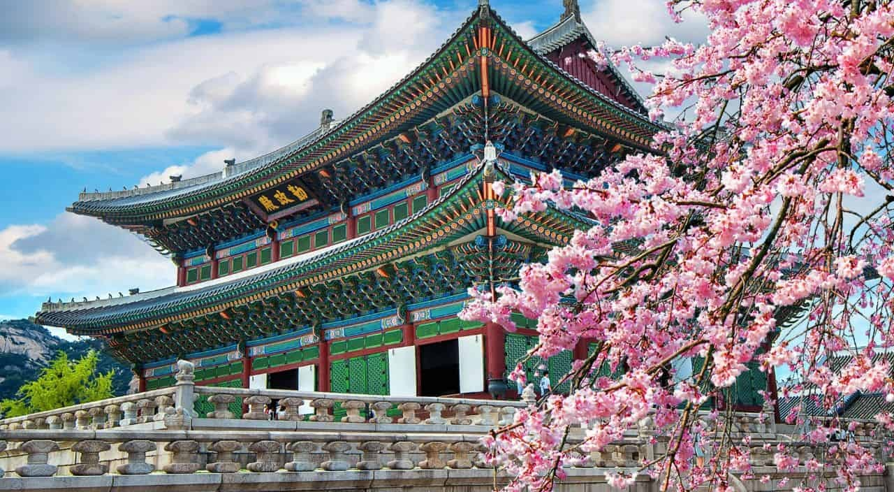
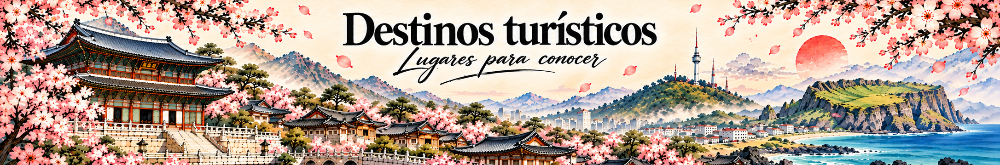
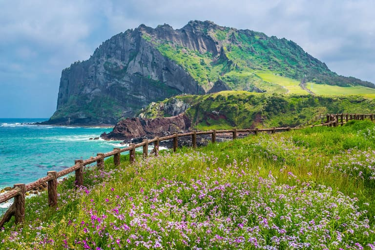
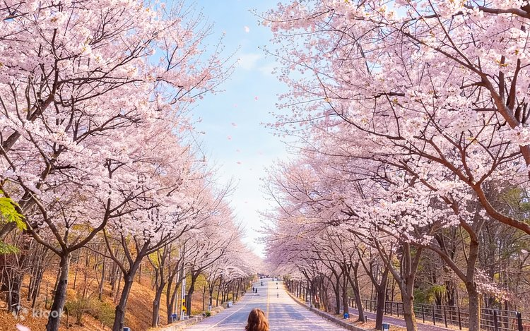

Seúl
El corazón del país donde la tradición milenaria convive con la tecnología futurista. Destacan sus rascacielos, palacios imperiales de la dinastía Joseon y mercados nocturnos.


El corazón del país donde la tradición milenaria convive con la tecnología futurista. Destacan sus rascacielos, palacios imperiales de la dinastía Joseon y mercados nocturnos.

Es la segunda ciudad más importante y la gran capital costera. Es famosa por sus playas, la vibrante vida nocturna, sus mercados de mariscos y sus pintorescos barrios de colina.

Es conocida por el pico Seongsan Ilchulbong (un cráter volcánico que emerge sobre el mar), el monte Hallasan (la montaña más alta de Corea) y sus famosas Haenyeo (mujeres buceadoras tradicionales que pescan sin equipo de oxígeno).
Es la escapada perfecta para los amantes de la naturaleza, el senderismo y los paisajes fotogénicos.


Conocida como "el museo sin muros". Fue la antigua capital del reino de Silla y alberga ruinas históricas, templos antiguos y tumbas reales volcadas en colinas verdes.

Una pequeña isla en forma de media luna situada en el río Han, a poca distancia de Seúl. Es célebre por sus senderos bordeados de arboladas espectaculares y por ser el escenario de rodaje del icónico drama Sonata de Invierno, que impulsó la ola global del K-Drama.